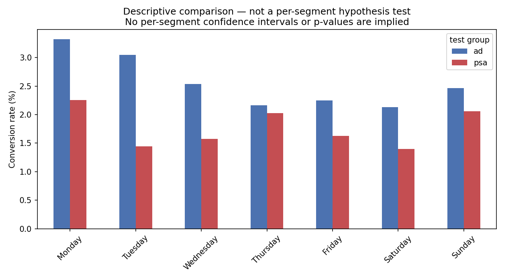

A/B Testing — Marketing Campaign Effectiveness
Python · Pandas · SciPy · statsmodels
Analyzed a 588,101-user marketing experiment to measure whether the campaign lifted conversion, then pushed past the p-value into cost sensitivity and ROI scenarios.
Detected a statistically robust 43% conversion lift, verified as timing-independent, with 95% confidence intervals.
Profitability could not be confirmed from this dataset alone — ad cost was not observed, so the ROI figures are scenario-based.
View on GitHub →github.com/joshpeterpardosi/ab-test-marketing-analysis